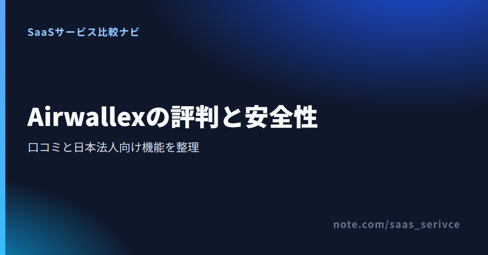

Airwallexは、海外との取引がある企業向けの決済サービスです。日本ではオンライン決済の受け取りを中心に提供しており、海外版とは使える機能が異なります。
この記事では、公開レビューの良い声と不満を分けて紹介します。国内の登録状況や料金、日本法人が申し込める機能もあわせて解説します。
海外では、複数通貨の管理を評価する声があります。一方、追加審査や資金保留、サポートの説明に対する不満も見られます。
日本法人が現在使える中心機能は、カードやデジタルウォレットによるオンライン決済です。海外レビューで評価される外貨口座や法人カードは、国内ではまだ利用できません。
国内向けに案内されている機能と、申込窓口を確認できるページです。
良い評判は、国境をまたぐ資金管理に集まっています。ただし、TrustpilotやCapterraには海外契約者の投稿も含まれます。
TrustpilotやCapterraでは、複数通貨の資金管理や海外送金を一つのサービスへまとめられる点が評価されています。海外に拠点や取引先がある企業には、口座と送金を同じ画面で扱えることが魅力です。
ただし、これは主に海外版のグローバルアカウントを使った評価です。日本法人では外貨口座と海外送金が現在提供されていないため、同じ利点をそのまま期待できません。
否定的な投稿では、追加審査、口座制限、資金保留、理由の説明不足への不満が目立ちます。金融サービスには審査が必要です。ただし、審査中に資金を動かせないリスクは別に考える必要があります。
TrustpilotやRedditには、利用開始後に追加資料を求められた、アカウントが制限されたという投稿があります。Redditには短時間でビジネスアカウントが閉鎖されたと訴える例もあります。
投稿者の国、業種、契約主体が不明な例もあり、日本法人で同じ対応になるとは限りません。それでも、事業内容や取引先を示す資料が不足すると、審査に時間がかかる可能性は考えておくべきです。
TrustpilotとRedditでは、入金が保留された、返金に時間がかかったという不満も見られます。とくに海外取引では、入金元と請求書の名義が違う場合などに確認が増えることがあります。
契約前には、請求書、取引の証憑、取引先との関係を説明できる資料をそろえておきましょう。売上の受け取りを一社へ集中させず、別の銀行や決済手段も残しておくと、審査中の資金繰りに備えられます。
制限の理由が十分に説明されなかった、窓口から具体的な回答を得にくかったという投稿もあります。不正利用対策の詳細を開示できない事情があっても、利用企業にとっては業務の見通しが立たない点が問題です。
単一の投稿だけで、Airwallex全体の対応を断定するのは避けましょう。直近の投稿と企業側の返信を読み、同じ不満が繰り返されているかを見ると判断しやすくなります。
登録前に日本の利用条件と問い合わせ窓口へ進めます。審査資料について相談したい場合の入口にもなります。
Airwallex Japan株式会社は、国内で複数の登録を受けています。公式の安全管理情報も公開されていますが、登録や対策が口座制限の不在を保証するわけではありません。
Airwallex Japan株式会社が受けている登録は次の3つです。
国内の登録を確認できる点は、運営主体を見極める材料になります。ただし、この登録制度は、個々の取引の継続や損失の回避まで保証するものではありません。
Airwallexのセキュリティポータルには、PCI DSS Level 1証明書、SOC 2 Type II報告書、侵入テスト報告書が掲載されています。監査ログ、データのバックアップ、DDoS対策も管理項目として示されています。
一部の詳細資料は閲覧申請が必要です。導入審査では、必要な資料を入手できるか、日本で契約するサービスも各管理策の対象かを確かめます。
国内向けの利用規約では、利用開始後も追加情報の提出を求める場合があると定めています。審査が終わるまでサービスを提供しないことや、審査不成立の理由を説明しないこともあります。
決済金をAirwallexだけで受け取る企業は、制限時に売上金を動かせない事態を想定しておきたいところです。別の決済手段と銀行口座を残し、追加資料の提出担当も決めておきましょう。
日本での運営主体と、現在案内されているサービス内容を確認できます。
日本で登記した会社は、Airwallex Japan株式会社との契約として申し込めます。現在の中心機能はオンライン決済で、海外版の外貨口座や法人カードは対象外です。
国内で提供されている中心機能は、オンライン決済の受け取りです。Visa、Mastercard、American Expressに加え、Apple PayとGoogle Payを利用できます。
サブスクリプション管理はAPI経由で提供されます。自社サイトやアプリへ定期課金を組み込む企業向けで、管理画面だけで完結するサービスではありません。
グローバルアカウントとコーポレートカードは、日本法人には現在提供されていません。海外レビューで多く語られる外貨の受取口座と、カードによる経費管理は、日本の契約には当てはめられません。
第二種資金移動業の登録後、送金・集金サービスの日本展開は計画されています。両替とSWIFT送金の料金は掲載されていますが、日本法人が使えるとは明記されていません。
国内向けの利用規約には、会社と個人事業主への言及があります。一方、公式ヘルプの申込資格は「正式に設立された会社」を対象としており、日本の個人事業主については案内が一致していません。個人事業主は申込み前の問い合わせが必要です。
公式サイトと利用規約には日本語版があります。一方、管理画面は日本語に未対応です。ヘルプセンターと問い合わせフォームは英語で、有人窓口が日本語に対応するかは公式情報で確認できません。
国内料金は月額プランではなく、取引ごとの手数料制です。為替やSWIFT送金の料金も掲載されていますが、日本法人がその機能を使えることを示すものではありません。
オンライン決済の料金は次のとおりです。無料トライアルの案内はありません。
月額固定費ではなく、売上の件数と金額に応じて費用が増える仕組みです。海外発行カードの利用が多い企業は、追加料率まで含めて粗利を計算してください。
料金ページには、グローバルアカウントの月額無料と、国内手段による送金無料が掲載されています。SWIFT送金は2,200〜3,800円、両替は銀行間レート＋0.2%〜です。
料金の掲載だけでは、日本法人が契約できる根拠になりません。オンライン決済以外を目的にする場合は、対象機能の申込可否を先に問い合わせましょう。
国内の決済料率と、利用できない機能の注記を同じページで確認できます。
国内向けの利用規約では、未処理の取引がなければ、30日前の書面通知でサービスの一部または全部を終了できます。
規約にはウォレット残高の条項もありますが、グローバルアカウントは国内未提供です。そのため、日本のオンライン決済を解約する手順としては扱いません。別サービスへ切り替える前に、未処理の決済を洗い出してから通知しましょう。
Airwallexが候補になるのは、日本で越境ECなどのオンライン決済を受けたい法人です。以下の3社は、オンライン決済の直接的な比較相手ではありません。外貨受取や法人海外送金を重視する場合の選択肢です。
決済額に応じた料率を受け入れられ、審査時の書類を準備できる企業向けです。外貨の保有や海外送金まで一つにまとめたい企業には、現時点では機能が足りません。
Wise Businessは月額費用がなく、送金・両替の手数料は0.27%〜です。21通貨の受取口座情報を使えるため、オンライン決済より外貨受取を優先する企業に合います。
Payoneerには日本語の公式サイトがあり、既存顧客向けの日本語電話サポートも案内されています。年間アカウント手数料は、連続する12か月の受取額が6,000 USD未満の場合に29.95 USDです。
Revolut Businessは、日本法人の代替候補にはなりません。外貨受取や海外送金をすぐ始めるなら、Wise BusinessかPayoneerを比較します。
サービス利用者の評判、社員による会社評価、海外掲示板の投稿は対象が異なります。誰が、どの国の契約について書いたのかを分けて読むことが大切です。
同じではありません。OpenWorkなどの社員レビューは、勤務先としてのAirwallex Japan株式会社を評価したものです。決済サービスの使い勝手や審査対応を知りたい場合は、TrustpilotやCapterraなどの利用者レビューを見ます。
日本法人にはそのまま当てはまりません。所在地や契約主体が不明な投稿には、日本で未提供の外貨口座や海外送金に関する内容も含まれるためです。
Airwallex Japan株式会社は銀行ではありません。電子決済等代行業、クレジットカード関連、第二種資金移動業の登録を受けた事業者です。
資金の扱いは、契約主体と利用する機能によって異なります。海外版の資金保全に関する説明を日本の契約へそのまま当てはめず、日本向け利用規約を基準にしてください。
管理画面、ヘルプセンター、問い合わせフォームは日本語に対応していません。有人窓口の対応言語と、日本語で審査資料を提出できるかは公式情報に明記されていません。
Airwallexは、日本でオンライン決済を受けたい法人の候補です。一方、海外レビューで評価される外貨口座や法人カードは国内で提供されていません。
公開レビューでは、複数通貨管理を評価する声と、審査や資金保留への不満が併存しています。契約地域の違いを見落とさず、日本向けの提供範囲と自社の目的を照らし合わせてください。
自社が申し込める機能と、最新の日本向け料金を確認できます。